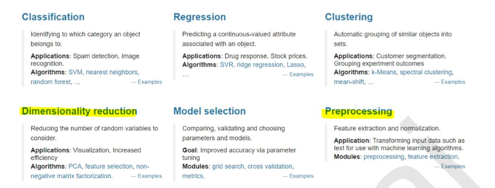

Table of Contents
1. Scikit-learn 介绍
Scikit-learn 是开源的 Python 库，通过统一的界面实现机器学习、预处理、交叉验证及可视化算法。
Scikit-learn 基于 numpy、scipy 开发。numpy基于C编写，不支持GPU。
scikit-learn 网站：https://scikit-learn.org
scikit-learn 的6大模块

1 分类
2 回归
3 聚类
4 降维
5 模型选择
6 预处理
2. Scikit-learn 机器学习步骤
Scikit-learn 机器学习基本步骤：
# 导入 sklearn from sklearn import neighbors, datasets, preprocessing from sklearn.model_selection import train_test_split from sklearn.metrics import accuracy_score # 加载数据 iris = datasets.load_iris() # 划分训练集与测试集 X, y = iris.data[:, :2], iris.target X_train, X_test, y_train, y_test = train_test_split(X, y, random_state=33) # 数据预处理 scaler = preprocessing.StandardScaler().fit(X_train) X_train = scaler.transform(X_train) X_test = scaler.transform(X_test) # 创建模型 knn = neighbors.KNeighborsClassifier(n_neighbors=5) # 模型拟合 knn.fit(X_train, y_train) # 预测 y_pred = knn.predict(X_test) # 评估 accuracy_score(y_test, y_pred)
scikit-learn (sklearn) 官方文档中文版1
3. 库使用路线图

4. 参考资料
-
scikit-learn (sklearn) 官方文档中文版
：https://sklearn.apachecn.org/docs/0.21.3/ ↩